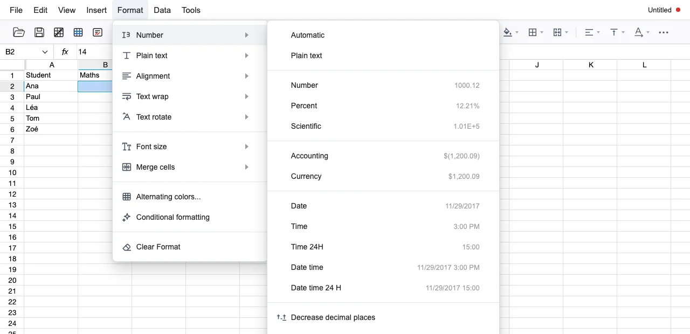

The interface

From top to bottom: the menu bar, the toolbar, the formula bar, the sheet, the sheet tabs and the zoom.
Menus
| Menu | Contents |
|---|---|
| File | open, save, print |
| Edit | undo, redo, fill down, right |
| View | gridlines, freeze |
| Insert | image, chart, checkbox, drop-down list |
| Format | number, text, alignment, merging, alternating colors, conditional formatting |
| Data | sort and filter |
| Tools | protect, this manual (User manual), DocTools, source code, version (About...) |
A check mark shows an active option: gridlines shown, frozen cells, bold, filter, protected workbook.

The toolbar
| Button | Role |
|---|---|
| open, save | |
| show or hide the gridlines | |
| alternating colors | |
| conditional formatting | |
| protect; bluish when the workbook is protected | |
| insert a chart | |
| insert an image | |
| undo, redo | |
| clear the formatting | |
| percentage, fewer or more decimals | |
| Automatic, Arial, 10 | number format, font, size |
| bold, italic, underlined | |
| text color, fill color | |
| borders, merging | |
| alignments, rotation, wrapping | |
| freeze | |
| automatic sum and other formulas | |
| sort and filter |
The small arrow of a button opens its choices; the button itself repeats the last one. In a narrow window, the last buttons are behind .
The formula bar
- On the left, the name box: the address of the selection, or the name of the range. Its arrow lists the named ranges and opens the name manager.
- To the right of fx, the content of the cell, including its formula: it can be edited there.
The sheet
- A right-click opens a menu that depends on the place: cell, column or row header, sheet tab.
- A new sheet has 84 rows and 60 columns (A to BH). More are added by right-click, Insert (rows and columns).
- The blue handle at the corner of the selection fills.
Tabs and zoom
At the bottom, adds a sheet, lists them all (sheets). On the right, − and + set the zoom; a click on the percentage offers 10% to 400%.
Undo
or Ctrl Z undoes, , Ctrl Y or Ctrl Shift Z redoes: entries, pastes, formatting, insertions. The history starts afresh when a workbook is opened, when gridlines are shown or hidden, when the workbook is protected, or when a name or a conditional formatting rule is added. Charts are not part of it: they are edited or deleted with their own buttons.